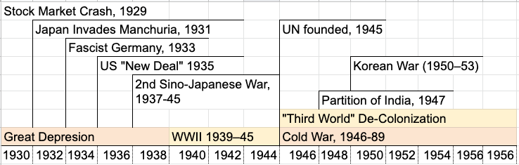
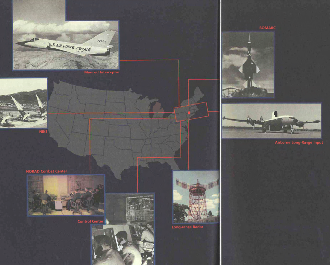

Unit 3 Intro Lecture
CSCI1800
Dr. Aaron Sidney Wright
asw@dal.ca

Agenda
- Meta-Overview of Unit 3
- Values in Technology Design
- SAGE
- Your questions
Use these slides on your own: https://g.aaronswright.com/.
Meta-Overview of Unit 3
Use the Schedule in the Course Syllabus
Intro Lecture Monday 4:05-5:35
Interactive Guest Lecture: Mon. Nov 2. 4:05-5:25 Dr. Helen Ai He
Meta-Overview of Unit 3
BrightSpace >
Content >
Unit 3
Unit 3 Writing Reflection
Recall: the Writing Process
Invention
Organization
Composition
Revision
Writing Reflection Short Exercise. Reflect on the writing process.
Instructions in Assignments > "Unit 3. Writing Reflection".
Pass/Fail, worth 2%.
No Thesis Development Sheet in Unit 3
Unit 3 Readings

- 7 Real Time: Reaping the Whirlwind
- 8 Software
- 9 New Modes of Computing
- Also examine the photographs in PHOTOS: From Babbage's Difference Engine to System/360 and PHOTOS: From SAGE to the Internet
Unit 3 Essays
- Essay Topic 1: Values in Technology Design
- Essay Topic 2: Did the Government Create the Software Industry and Silicon Valley?
- Essay Topic 3: Connect to Women in Tech
Agenda
- Meta-Overview of Unit 3
- Values in Technology Design
- SAGE
- Your questions
Use these slides on your own: https://g.aaronswright.com/.
Values in Technology Design
What are some examples of moral values in technology design?
Historical Example
Grace Hopper wanted computers to be accessible to regular people, without advanced training in mathematics. Hopper wrote the first compilers: A-0 (1951); MATH-MATIC (1955–57); FLOW-MATIC (1955–59).
"Accessibility" is an example of a moral value that directed Hopper's development of new technologies.
Technologies and Values
Unit 3 New Technologies
- Real Time computing
- SAGE air defence system
- SABRE Airline reservations
- ATMs
- Visa system
- BASIC
- UNIX
- Time sharing
- Computer Utilities ⋮
Example Moral Values
- Privacy
- Accuracy
- Property / ownership
- Accessibility
- Democracy
- Dignity
- Justice
- Autonomy
- Freedom
- Informed consent ⋮
Technologies and Values
Can you think of examples of Tech+Values from Unit 1 and Unit 2?

More on Tech Design and Values
Use the Schedule in the Course Syllabus
Interactive Guest Lecture: Mon. Nov 2. 4:05-5:25 Dr. Helen Ai He
Agenda
- Meta-Overview of Unit 3
- Values in Technology Design
- SAGE
- Your questions
Use these slides on your own: https://g.aaronswright.com/.
SAGE/ Cold War
Cold War Anti-Aircraft Systems
Semi Automatic Ground Environment
SAGE
SAGE
Madeline Carey, SAGE programmer, with ~60,000 punch cards (same as SAGE master program)
IBM /SAGE promotional film: archive.org/details/OnGuard1956
SAGE
SAGE: Completed in 1963
Obsolete on delivery!
SAGE Impact
SAGE Moral Values?
Agenda
- Meta-Overview of Unit 3
- Values in Technology Design
- SAGE
- Your questions
Use these slides on your own: https://g.aaronswright.com/.
Your questions
Thank you for joining!
Dr. Aaron Sidney Wright
CSCI1800 Fall 2020
Use these slides on your own: https://g.aaronswright.com/.